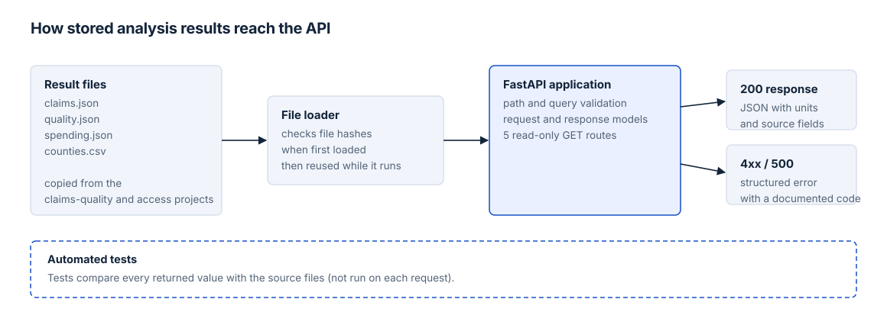

Analytics delivery · Python · FastAPI · Response validation
Healthcare Analytics API
Read-only FastAPI service that lets other applications use the results of the claims and access analyses.
Problem
The claims and access projects end in CSV and JSON files. Anything that wants to use those results has to know each project's file layout and handle missing or bad data on its own, and it breaks whenever a file changes.
What I did
Built a read-only FastAPI service over result files packaged from the two projects. It serves a fixed snapshot and recalculates nothing.
Defined every response with validation models, so each metric comes back with its unit, denominator, source period and source version. Totals are returned in integer cents and missing values as null, not zero. Invalid inputs return errors in one JSON format with documented codes.

| GET endpoint | Purpose |
|---|---|
/health | Service status and data check |
/quality/summary | Results from the synthetic validation tests |
/spending/summary | Validated spending totals and the incorrect-join comparison |
/access/counties | Massachusetts county indicators; optional selection filter |
/access/counties/{county_fips} | Indicators for one county, selected by FIPS code |
Error responses by status code
- 400: malformed FIPS or repeated query parameters.
- 422: unsupported query parameter or filter value.
- 404: unavailable county or unknown route.
- 405: unsupported method on a valid route.
- 500: internal failure, with a generic message.
Result
Tests check every metric and denominator the service returns against the packaged source files. Other tests cover response shapes, bad input, missing or altered data files, and repeat runs.
Examples
Responses recorded from a local run of the API. This page does not call a live server.
View the complete recorded JSON response
Limitations
The API serves a fixed snapshot of the two projects' outputs. It runs locally as a demonstration and is not a production service. The claims data are synthetic, and the access indicators are historical public figures. Every limitation of the source projects also applies here.